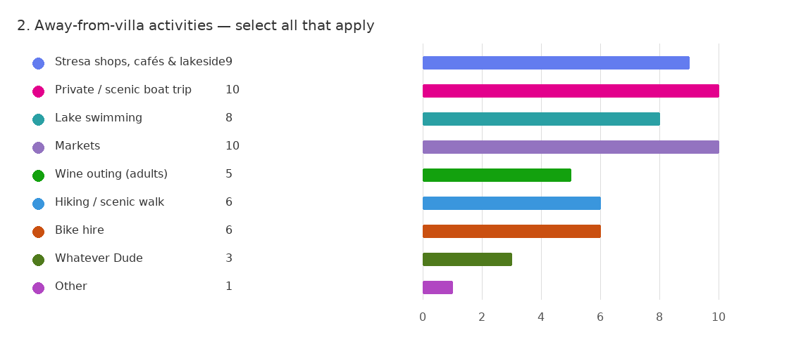

🏝️ Borromean Islands by Ferry
Classic Lake Maggiore day: hop between Isola Bella, Isola Madre and Isola dei Pescatori with gardens, palaces and lunch options.
Useful for down days and independent wandering.
Keep restaurant choice open for now; book larger dinners ahead.
What the family said they were most interested in.
The priority set leans towards scenic lake experiences, one or two iconic day trips, and flexible down-time around the villa. Food, wine and picturesque villages scored consistently high. High-intensity adventure activities were lower priority overall.
Collapsible views of questionnaire results, slides 2–5.

Result view 2 of 5
Brief summaries only — links have been refreshed where possible.
Classic Lake Maggiore day: hop between Isola Bella, Isola Madre and Isola dei Pescatori with gardens, palaces and lunch options.
Panoramic summit views over Lake Maggiore and Lake Orta, with easy scenic stops and family photo opportunities.
Discover one of Piedmont's hidden wine regions just south of Lake Maggiore. Visit a traditional winery, tour historic cellars and enjoy tastings of Nebbiolo-based wines paired with local cheeses and charcuterie. Easier and closer than a full Barolo day trip.
A bucket-list wine day through the UNESCO vineyards of Langhe. Visit the famous Barolo and Barbaresco regions, enjoy cellar tours, wine tastings and spectacular views across some of Italy's most celebrated wine country.
Key constraint: one car with 5 seats available.
| What | Best use | Notes |
|---|---|---|
| Car (5 seats) | Flexible family outings, supermarket runs, early starts | Plan bigger split-days carefully if everyone wants different activities. |
| Ferries | Islands + lakefront town hopping | Ideal for relaxed sightseeing; weather-dependent. |
| Train / taxi | Milan or airport legs, occasional day trip support | Useful fallback when parking is difficult. |
All key links in one place.